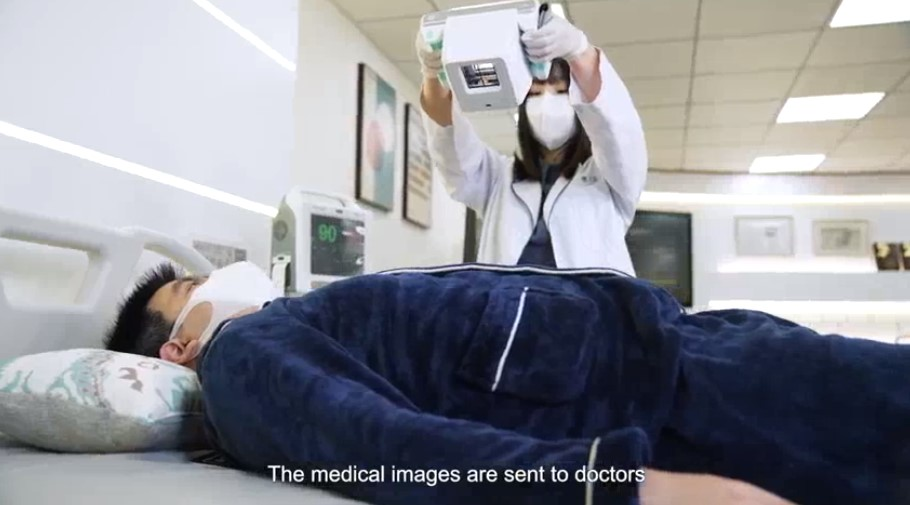

Article Jan 06, 2022
Energy Resources International Co, Ltd. recently announced the launch of a revolutionary lightweight portable X-ray machine, which will bring a huge breakthrough to the medical industry. Traditional removable X-ray machines weigh between 300 and 600 kilograms, making them difficult to move. However, in the context of the outbreak of the epidemic and the vigorous development of telemedicine, the successful development of a lightweight portable X-ray machine weighing only 3.2 kg will greatly change the way medical treatment is made.
Yang Congmin, deputy general manager of Energy Resources International Co, Ltd., pointed out that this X-ray machine was developed with a people-oriented concept. In the past, taking an X-ray required a cumbersome procedure, which was unfriendly to patients with reduced mobility and burdened medical staff. Now, the X-ray machine can be easily moved next to the patient to quickly complete the examination. The X-ray tube developed using carbon nanotube technology is resistant to high temperature and pressure, not only lightweight, but also low-dose imaging, ensuring that users and subjects are not affected by excessive radiation dose, providing a safer examination process.
At present, Energy Resources International Co, Ltd. has obtained TFDA certification for handheld dental X-ray machines, and successfully developed handheld chest and limb X-ray machines, which have been tested and confirmed to be practical applications in operating rooms, laboratories, outdoor occasions and other environments. These new X-ray machines can also be used in quick screening locations, ambulances and special occasions such as baby photography needs, providing accurate and real-time images.

a portable low-radiation X-ray machine
At present, Energy Resources International Co, Ltd. has obtained TFDA certification for handheld dental X-ray machines, and successfully developed handheld chest and limb X-ray machines, which have been tested and confirmed to be practical applications in operating rooms, laboratories, outdoor occasions and other environments. These new X-ray machines can also be used in quick screening locations, ambulances and special occasions such as baby photography needs, providing accurate and real-time images.
Energy Resources International Co, Ltd. future market targets are mainly in the fields of hospital, mobile medicine, home care and telemedicine diagnosis. For example, when setting up temporary checkpoints outdoors, this equipment can be used together to transmit images in real time, facilitate clinical diagnosis and interpretation, completely liberate the X-ray shooting field from the hospital, and benefit more patients through scientific and technological power.
 Article
Mar 20, 2023
Article
Mar 20, 2023
Among the latest technological breakthroughs, a portable low-radiation X-ray machine using advanced carbon nanotube technology won the North American Radiology Society Award for Best Innovative Technology. The breakthrough development of this technology has attracted a lot of attention from the global medical community.
Read moreEnergy Resources International Co, Ltd. was established in Taiwan in 1999 and currently has several technologies and applied for invention patents. It is equipped with nanometers CVXair, a portable dental X-ray machine with carbon tube cold cathode X-ray tube, has completed TFDA certification and is expected to obtain GMP and TFDA certification for use in clinics and care centres.
Read more Video
May 22, 2023
Video
May 22, 2023
Energy Resources International Co., Ltd., established in Taiwan. With its carbon nanotube technology, ERI has developed handheld X-ray machines, which can generate high-quality X-ray at low radiation doses. Handheld X-ray machine are light and convenient, that are suitable for medical institutions, home healthcare and emergency diagnosis, making medical services easier to carry.
Read more